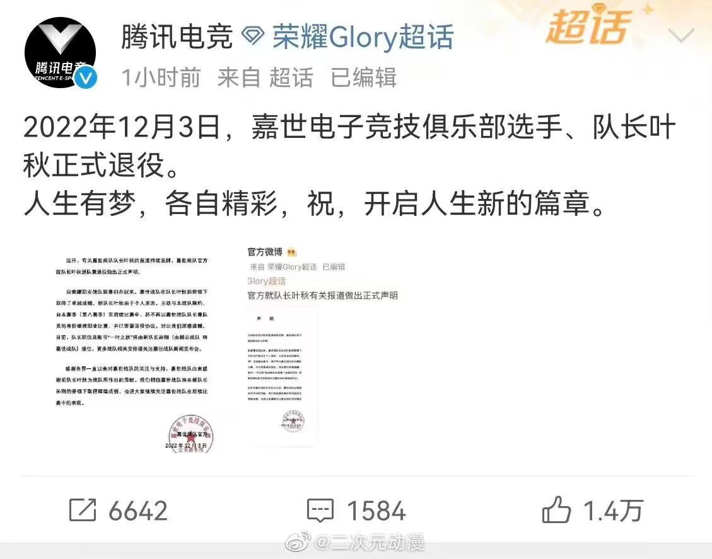
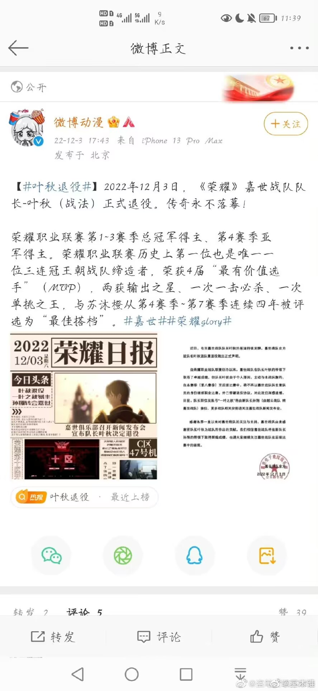

再见，叶秋
来自荣耀联盟官方
本周，嘉世俱乐部发布了有关嘉世战队队长叶秋退役的通告，队长一职以及一叶之秋账号由上赛季的最佳新人孙翔接任。本站记者第一时间去往嘉世俱乐部采访了其战队经理——崔立。
在采访中，崔立提到：平日里，叶队大部分时间醉心于荣耀，战队运营和队员间的相互磨合更多的由副队长刘皓代劳。叶队对于战队内成员磨合、指导较少或许也是从第四赛季起嘉世便无缘决赛的原因。而叶队的退役或许与他难以平衡个人能力的提升和战队粘合度的提升有很大关系。
但不可否认的是叶队的个人能力依旧处于联盟前列。 从叶队提出退役的想法到正式宣布退役这段时间里，我们也多次与叶队沟通，老板陶轩也曾亲自挽留。但多次挽留无果后，我们决定尊重叶队的意愿。
同时，叶队也婉拒担任俱乐部的其他职务，对此，我们表示尊重。
叶队的离开，对于嘉世无疑是一大遗憾，嘉世王朝的建立，叶队立下了汗马功劳，但天下没有不散的筵席，叶队在嘉世已经征战了8年，我们对他也有诸多不舍。
叶队走后，嘉世夺冠的目标也不会改变，我们将继承叶队的意志，继续在联盟中征战。由嘉世内部和叶队本人的同意，一叶之秋账号卡和叶秋的队长之位将由孙翔接替，孙翔作为上一赛季的最佳新人，实力强悍，我们期盼他能带领嘉世拿下冠军。
在对嘉世的采访过程中，还有值得一提的是，崔立先生带我们参观了嘉世俱乐部。
网游部部长（即嘉王朝公会会长）陈夜辉告诉我们，他曾经其实也是嘉世青训营的一员，但因为叶秋认为他并不适合职业联赛而抱憾进入网游部。对于叶队的决定，战队一直都是全力支持。包括战队成员和参赛队员的选择也由叶队敲定。虽然叶队在团队磨合上略有不足，但是战队依然坚定的认可他作为队长的能力。 本月五号将会进行嘉世与三零一度的比赛，这无疑是证明嘉世这一次人员更替是否正确的机会。
对于叶秋的突然退役，本刊还采访了联盟中部分战队的看法：
记者：请问您对叶秋的退役有什么看法？
韩文清：他的退役不会对霸图有任何影响，霸图也不止叶秋这一个对手，霸图依然一如既往。
王杰希：有叶秋的嘉世对微草来说一支劲旅，但没有叶秋的嘉世我们也绝不会忽视。对于叶秋的离开，我给予应有的祝福。
喻文州：叶秋前辈是一个很优秀的职业选手，他的退役是联盟的一大遗憾。
网络上叶秋的退役也掀起了轩然大波。部分粉丝认为他到了退役的年纪并对其表示祝福，而另一部分粉丝则认为他远没到退役的程度；有部分网友认为没有了叶秋的嘉世将会是一片散沙，但也有网友觉得最佳新人孙翔的加入会给嘉世带来更好的发展。
下面让我们回顾一下叶秋的光辉战绩：荣耀教科书、首席战术大师、荣耀第一人，其角色一叶之秋更是拥有“斗神”的称号。他曾连续三次带领嘉世战队夺得荣耀联盟总冠军，铸造了荣耀史上第一个也是唯一一个王朝。 叶秋在未退役时表现的十分神秘，至今仍未在大众前露过面，但即便如此，他也在每次的全明星投票上稳居前三。
无论叶秋的退役会对荣耀带来怎样的影响，都不可否认叶秋是一个非常伟大的选手。现在，他正式告别了奋斗了八年之久的职业赛场，他将青春奉献给了荣耀赛场，无论他因什么退役，都值得我们尊重和祝福，也愿叶秋在以后的退役生活中能和在荣耀赛场上一样精彩。
作者：夏子@咕噜咕噜-夏子冒泡 烟岚@落灯花_来第十区找我玩呀
主编：不染@叶秋是永远的神 夏子@咕噜咕噜-夏子冒泡